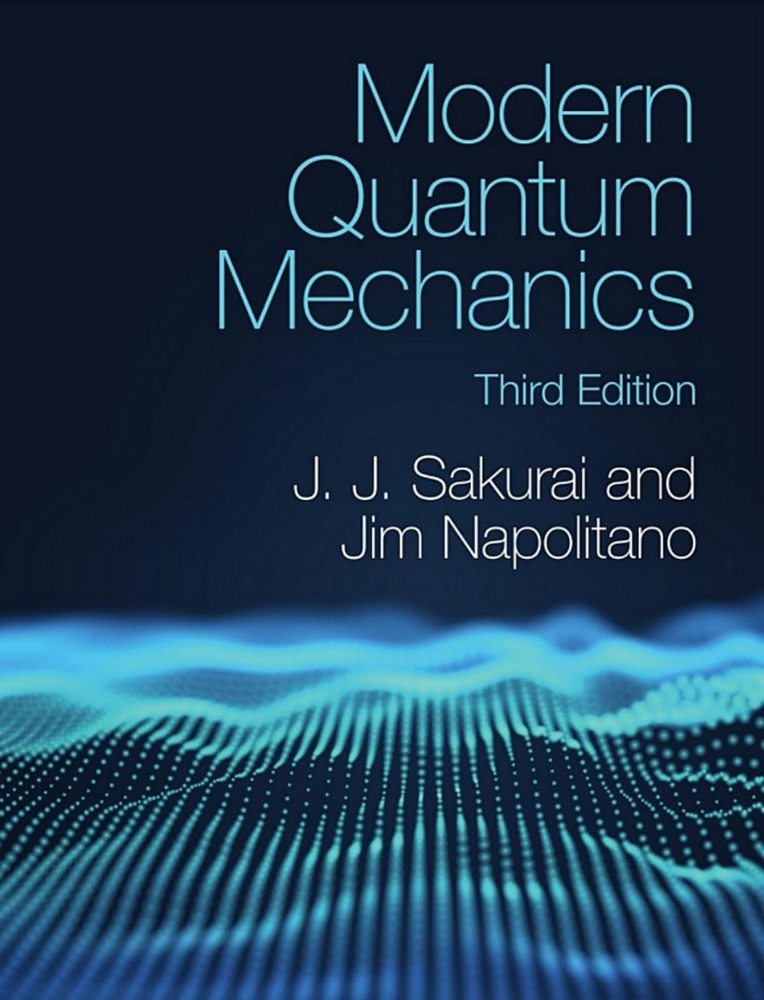

Modern Quantum Mechanics
J. J. Sakurai, Jim Napolitano
Third Edition

1. Fundamental Concepts
1.1 The Stern-Gerlach Experiment
1.1.1 Description of the Experiment
1.1.2 Sequential Stern-Gerlach Experiments
1.1.3 Analogy with Polarization of Light
1.2 Kets, Bras, and Operators
1.2.1 Ket Space
1.2.2 Bra Space and Inner Products
1.2.3 Operators
1.2.4 Multiplication
1.2.5 The Associative Axiom
1.3 Base Kets and Matrix Representations
1.3.1 Eigenkets of an Observable
1.3.2 Eigenkets as Base Kets
1.3.3 Matrix Representations
1.3.4 Spin ½ Systems
1.4 Measurements, Observables, and the Uncertainty Relations
1.4.1 Measurements
1.4.2 Spin ½ Systems, Once Again
1.4.3 Compatible Observables
1.4.4 Incompatible Observables
1.4.5 The Uncertainty Relation
1.5 Change of Basis
1.5.1 Transformation Operator
1.5.2 Transformation Matrix
1.5.3 Diagonalization
1.5.4 Unitary Equivalent Observables
1.6 Position, Momentum, and Translation
1.6.1 Continuous Spectra
1.6.2 Position Eigenkets and Position Measurements
1.6.3 Translation
1.6.4 Momentum as a Generator of Translation
1.6.5 The Canonical Commutation Relations
1.7 Wave Functions in Position and Momentum Space
1.7.1 Position-Space Wave Function
1.7.2 Momentum Operator in the Position Basis
1.7.3 Momentum-Space Wave Function
1.7.4 Gaussian Wave Packets
1.7.5 Generalization to Three Dimensions
2. Quantum Dynamics
2.1 Time Evolution and the Schrödinger Equation
2.1.1 Time-Evolution Operator
2.1.2 The Schrödinger Equation
2.1.3 Energy Eigenkets
2.1.4 Time Dependence of Expectation Values
2.1.5 Spin Precession
2.1.6 Neutrino Oscillations
2.1.7 Correlation Amplitude and the Energy-Time Uncertainty Relation
2.2 The Schrödinger Versus the Heisenberg Picture
2.2.1 Unitary Operators
2.2.2 State Kets and Observables in the Schrödinger and the Heisenberg Pictures
2.2.3 The Heisenberg Equation of Motion
2.2.4 Free Particles: Ehrenfest's Theorem
2.2.5 Base Kets and Transition Amplitudes
2.3 Simple Harmonic Oscillator
2.3.1 Energy Eigenkets and Energy Eigenvalues
2.3.2 Time Development of the Oscillator
2.4 Schrödinger's Wave Equation
2.4.1 Time-Dependent Wave Equation
2.4.2 The Time-Independent Wave Equation
2.4.3 Interpretations of the Wave Function
2.4.4 The Classical Limit
2.5 Elementary Solutions to Schrödinger's Wave Equation
2.5.1 Free Particle in Three Dimensions
2.5.2 The Simple Harmonic Oscillator
2.5.3 The Linear Potential
2.5.4 The WKB (Semiclassical) Approximation
2.6 Propagators and Feynman Path Integrals
2.6.1 Propagators in Wave Mechanics
2.6.2 Propagator as a Transition Amplitude
2.6.3 Path Integrals as the Sum over Paths
2.6.4 Feynman's Formulation
2.7 Potentials and Gauge Transformations
2.7.1 Constant Potentials
2.7.2 Gravity in Quantum Mechanics
3.2.1 Rotation Operator for Spin $\frac{1}{2}$
3.2.2 Spin Precession Revisited
3.2.3 Neutron Interferometry Experiment to Study $2\pi$ Rotations
3.2.4 Pauli Two-Component Formalism
3.2.5 Rotations in the Two-Component Formalism
3.3 SO(3), SU(2), and Euler Rotations
3.3.1 Orthogonal Group
3.3.2 Unitary Unimodular Group
3.3.3 Euler Rotations
3.4 Density Operators and Pure Versus Mixed Ensembles
3.4.1 Polarized Versus Unpolarized Beams
3.4.2 Ensemble Averages and Density Operator
3.4.3 Time Evolution of Ensembles
3.4.4 Continuum Generalizations
3.4.5 Quantum Statistical Mechanics
3.5 Eigenvalues and Eigenstates of Angular Momentum
3.5.1 Commutation Relations and the Ladder Operators
3.5.2 Eigenvalues of $\mathbf{J}^2$ and $J_z$
3.5.3 Matrix Elements of Angular-Momentum Operators
3.5.4 Representations of the Rotation Operator
3.6 Orbital Angular Momentum
3.6.1 Orbital Angular Momentum as Rotation Generator
3.6.2 Spherical Harmonics
3.6.3 Spherical Harmonics as Rotation Matrices
3.7 Schrödinger's Equation for Central Potentials
3.7.1 The Radial Equation
3.7.2 The Free Particle and Infinite Spherical Well
3.7.3 The Isotropic Harmonic Oscillator
3.7.4 The Coulomb Potential
3.8 Addition of Angular Momenta
3.8.1 Simple Examples of Angular-Momentum Addition
3.8.2 Formal Theory of Angular-Momentum Addition
3.8.3 Recursion Relations for the Clebsch-Gordan Coefficients
3.8.4 Clebsch-Gordan Coefficients and Rotation Matrices
3.9 Schwinger's Oscillator Model of Angular Momentum
3.9.1 Angular Momentum and Uncoupled Oscillators
3.9.2 Explicit Formula for Rotation Matrices
3.10 Spin Correlation Measurements and Bell's Inequality
3.10.1 Correlations in Spin-Singlet States
3.10.2 Einstein's Locality Principle and Bell's Inequality
3.10.3 Quantum Mechanics and Bell's Inequality
3.11 Tensor Operators
3.11.1 Vector Operator
3.11.2 Cartesian Tensors Versus Irreducible Tensors
3.11.3 Product of Tensors
3.11.4 Matrix Elements of Tensor Operators; the Wigner-Eckart Theorem
4. Symmetry in Quantum Mechanics
4.1 Symmetries, Conservation Laws, and Degeneracies
4.1.1 Symmetries in Classical Physics
4.1.2 Symmetry in Quantum Mechanics
4.1.3 Degeneracies
4.1.4 SO(4) Symmetry in the Coulomb Potential
4.2 Discrete Symmetries, Parity, or Space Inversion
4.2.1 Wave Functions under Parity
4.2.2 Symmetrical Double-Well Potential
4.2.3 Parity-Selection Rule
4.2.4 Parity Nonconservation
4.3 Lattice Translation as a Discrete Symmetry
4.4 The Time-Reversal Discrete Symmetry
4.4.1 Digression on Symmetry Operations
4.4.2 Time-Reversal Operator
4.4.3 Wave Function
4.4.4 Time Reversal for a Spin $\frac{1}{2}$ System
4.4.5 Interactions with Electric and Magnetic Fields; Kramers Degeneracy
5. Approximation Methods
5.1 Time-Independent Perturbation Theory: Nondegenerate Case
5.1.1 Statement of the Problem
5.1.2 The Two-State Problem
5.1.3 Formal Development of Perturbation Expansion
5.1.4 Wave Function Renormalization
5.1.5 Elementary Examples
5.2 Time-Independent Perturbation Theory: The Degenerate Case
5.2.1 Linear Stark Effect
5.3 Hydrogenlike Atoms: Fine Structure and the Zeeman Effect
5.3.1 The Relativistic Correction to the Kinetic Energy
5.3.2 Spin-Orbit Interaction and Fine Structure
5.3.3 The Zeeman Effect
5.3.4 Van der Waals' Interaction
5.4 Variational Methods
5.5 Time-Dependent Potentials: The Interaction Picture
5.5.1 Statement of the Problem
5.5.2 The Interaction Picture
5.5.3 Time-Dependent Two-State Problems: Nuclear Magnetic Resonance, Masers, and So Forth
5.5.4 Spin Magnetic Resonance
5.5.5 Maser
5.6 Hamiltonians with Extreme Time Dependence
5.6.1 Sudden Approximation
5.6.2 Adiabatic Approximation
5.6.3 Berry's Phase
5.6.5 Aharonov-Bohm and Magnetic Monopoles Revisited
5.7 Time-Dependent Perturbation Theory
5.7.1 Dyson Series
5.7.2 Transition Probability
5.7.3 Constant Perturbation
5.7.4 Harmonic Perturbation
5.8 Applications to Interactions with the Classical Radiation Field
5.8.1 Absorption and Stimulated Emission
5.8.2 Electric Dipole Approximation
5.8.3 Photoelectric Effect
5.8.4 Spontaneous Emission
5.9 Energy Shift and Decay Width
6. Scattering Theory
6.1 Scattering as a Time-Dependent Perturbation
6.1.1 Transition Rates and Cross Sections
6.1.2 Solving for the $T$ Matrix
6.1.3 Scattering from the Future to the Past
6.2 The Scattering Amplitude
6.2.1 Wave Packet Description
6.2.2 The Optical Theorem
6.3 The Born Approximation
6.3.1 The Higher-Order Born Approximation
6.4 Phase Shifts and Partial Waves
6.4.1 Free-Particle States
6.4.2 Partial-Wave Expansion
6.4.3 Unitarity and Phase Shifts
6.4.4 Determination of Phase Shifts
6.4.5 Hard-Sphere Scattering
6.5 Eikonal Approximation
6.5.1 Partial Waves and the Eikonal Approximation
6.6 Low-Energy Scattering and Bound States
6.6.1 Rectangular Well or Barrier
6.6.2 Zero-Energy Scattering and Bound States
6.6.3 Bound States as Poles of $S_l(k)$
6.7 Resonance Scattering
6.8 Symmetry Considerations in Scattering
6.9 Inelastic Electron-Atom Scattering
6.9.1 Nuclear Form Factor
7. Identical Particles
7.1 Permutation Symmetry
7.2 Symmetrization Postulate
7.3 Two-Electron System
7.4 The Helium Atom
7.5 Multiparticle States
7.6 Density Functional Theory
7.6.1 The Energy Functional for a Single Particle
7.6.2 The Hohenberg-Kohn Theorem
7.6.3 The Kohn-Sham Equations
7.6.4 Models of the Exchange-Correlation Energy
7.6.5 Application to the Helium Atom
7.7 Quantum Fields
7.7.1 Second Quantization
7.7.2 Dynamical Variables in Second Quantization
7.7.3 Example: The Degenerate Electron Gas
7.8 Quantization of the Electromagnetic Field
7.8.1 Maxwell's Equations in Free Space
7.8.2 Photons and Energy Quantization
7.8.3 The Casimir Effect
7.8.4 Concluding Remarks
8. Relativistic Quantum Mechanics
8.1 Paths to Relativistic Quantum Mechanics
8.1.1 Natural Units
8.1.2 The Energy of a Free Relativistic Particle
8.1.3 The Klein-Gordon Equation
8.1.4 An Interpretation of Negative Energies
8.1.5 The Klein-Gordon Field
8.1.6 Summary: The Klein-Gordon Equation and the Scalar Field
8.2 The Dirac Equation
8.2.1 The Conserved Current
8.2.2 Free-Particle Solutions
8.2.3 Interpretation of Negative Energies
8.2.4 Electromagnetic Interactions
8.3 Symmetries of the Dirac Equation
8.3.1 Angular Momentum
8.3.2 Parity
8.3.3 Charge Conjugation
8.3.4 Time Reversal
8.3.5 CPT
8.4 Solving with a Central Potential
8.4.1 The One-Electron Atom
8.5 Relativistic Quantum Field Theory
Appendix A Electromagnetic Units
Appendix B Elementary Solutions to Schrödinger's Wave Equation
B.1 Free Particles ($V=0$)
B.2 Piecewise Constant Potentials in One Dimension
B.2.1 Rigid-Wall Potential (One-Dimensional Box)
B.2.2 Square-Well Potential
B.3 Transmission Reflection Problems
B.3.1 Square Well
B.3.2 Square Barrier
B.3.3 Potential Step
B.3.4 General Potential Barrier
B.4 Simple Harmonic Oscillator
B.5 The Central Force Problem
B.6 Hydrogen Atom
Appendix C Hamiltonian for a Charge in an Electromagnetic Field
Appendix D Proof of the Angular-Momentum Rule (3.358)
Appendix E Finding Clebsch-Gordan Coefficients
Appendix F Notes on Complex Variables
F.1 Complex Numbers and Complex Functions
F.2 Differentiation and Analyticity
F.3 Integration and Series Expansion
F.4 The Cauchy Residue Theorem